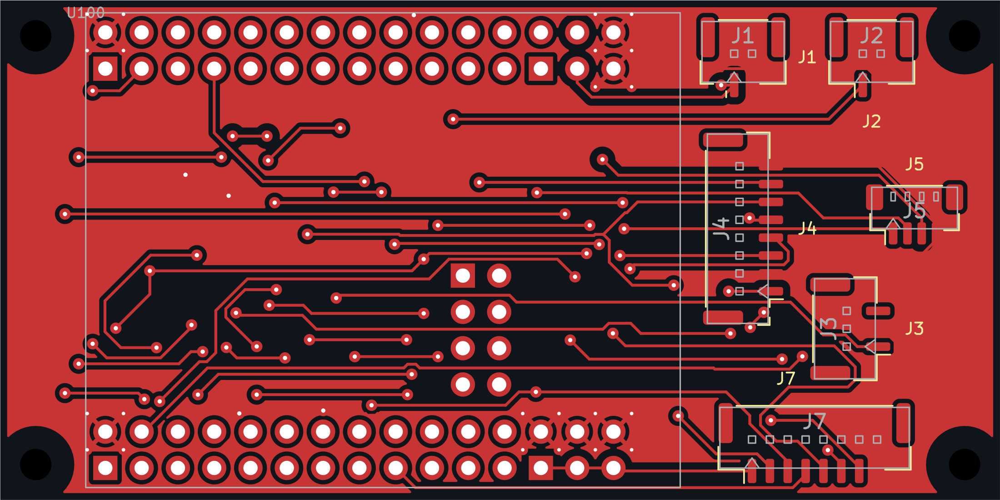
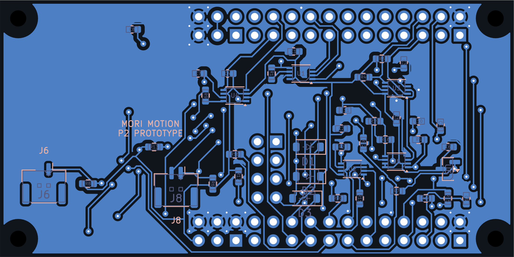
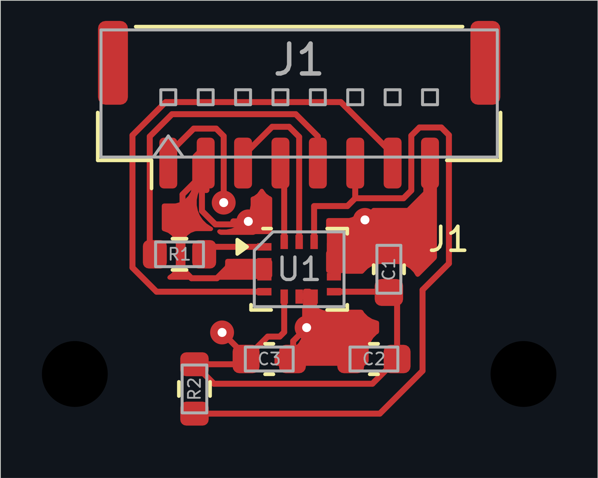
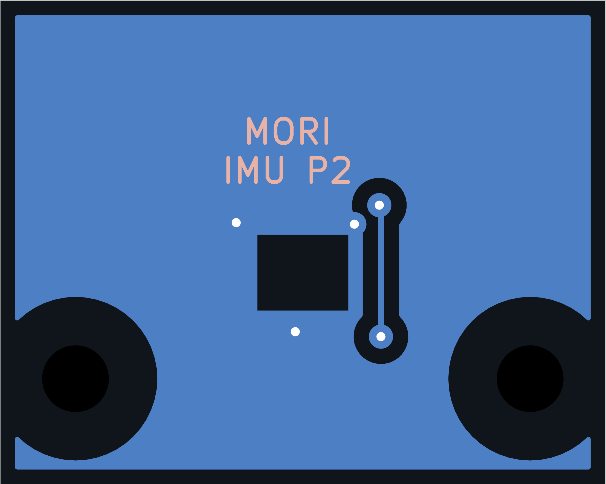
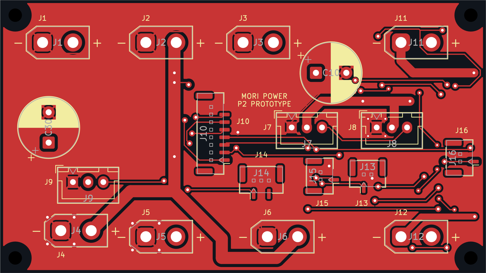
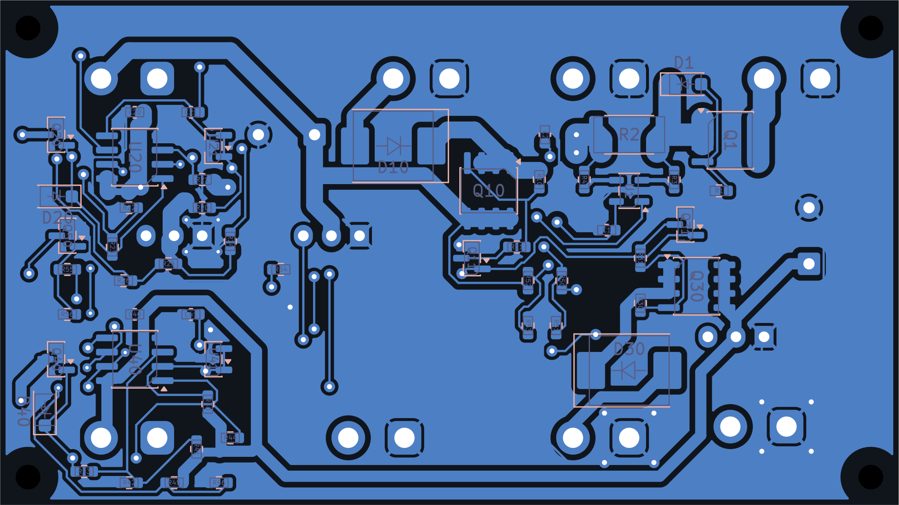

运动载板70 × 35 mm · 35 μm 外层铜 · 2 层 / 1.6 mm图层 铜层与器件装配图正面背面 · 已镜像KiCad 工程装配坐标实际 DRC
身体 IMU20 × 16 mm · 35 μm 外层铜 · 2 层 / 1.6 mm图层 铜层与器件装配图正面背面 · 已镜像KiCad 工程装配坐标实际 DRC
电源调理板80 × 45 mm · 70 μm 外层铜 · 2 层 / 1.6 mm图层 铜层与器件装配图正面背面 · 已镜像KiCad 工程装配坐标实际 DRC